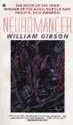
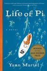
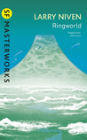
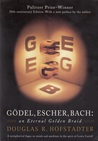
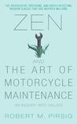
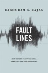
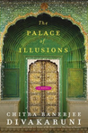

The Hitchhiker's Guide to the Galaxy (11 Votes)
Douglas Adams, 1979, 216 pages, 4.20 by 912616 users
Following list includes top modern reads suggested by members of Reddit India. Here is the link to the thread, and thanks to /u/mujerdeindia
for managing and giving me the data in a nice tabular format. The code is on Github.
The Hitchhiker's Guide to the Galaxy (11 Votes)
Douglas Adams, 1979, 216 pages, 4.20 by 912616 users
India after Gandhi (8 Votes)
Ramachandra Guha, 2007, 893 pages, 4.34 by 8440 users
The Skeptical Patriot (8 Votes)
Sidin Vadukut, 2014, 208 pages, 3.72 by 731 users

Infinite Jest (7 Votes)
David Foster Wallace, 1996, 1088 pages, 4.32 by 42583 users

Shantaram (7 Votes)
Gregory David Roberts, 2003, None pages, 4.25 by 85921 users

The God of Small Things (6 Votes)
Arundhati Roy, 1997, 340 pages, 3.90 by 154221 users
The Martian (6 Votes)
Andy Weir, 2011, 369 pages, 4.39 by 355328 users

A Short History of Nearly Everything (6 Votes)
Bill Bryson, 2003, 544 pages, 4.18 by 178353 users
The Ocean at the End of the Lane (6 Votes)
Neil Gaiman, 2013, 178 pages, 3.99 by 260142 users
Mr. Mercedes (6 Votes)
Stephen King, 2014, 436 pages, 3.90 by 105592 users
Millennium Trilogy (6 Votes)
Stig Larson, 2005, 1531 pages, 4.46 by 28731 users
Maus (4 Votes)
Art Spiegelman, 1986, 296 pages, 4.52 by 66955 users
Good Omens (4 Votes)
Terry Pratchett and Neil Gaiman, 1990, 430 pages, 4.25 by 272042 users
The Time Traveler's Wife (4 Votes)
Audrey Niffenegger, 2003, 500 pages, 3.94 by 437143 users
English, August (4 Votes)
Upamanyu Chatterjee, 1988, 326 pages, 3.76 by 3756 users

Catch-22 (4 Votes)
Joesph heller, 1961, 453 pages, 3.97 by 523415 users
In Other Words (3 Votes)
Jhumpa Lahiri, 2016, 233 pages, 3.57 by 3490 users
The Suitable Boy (3 Votes)
Vikram Seth, 1993, 1474 pages, 4.09 by 32305 users
World War Z: An Oral History of the Zombie War (3 Votes)
Max Brooks, 2006, 342 pages, 4.00 by 289933 users
Ibis Trilogy (3 Votes)
Amitav Ghosh, 2011, 522 pages, 3.90 by 4651 users
Watchmen (3 Votes)
Alan Moore,, 1987, 416 pages, 4.34 by 369992 users
House of Leaves (3 Votes)
Mark Danielewski, 2000, 705 pages, 4.14 by 69151 users
The Three Stigmata of Palmer Eldritch (3 Votes)
Philip K Dick, 1965, 231 pages, 4.01 by 18703 users
1Q84 (3 Votes)
Haruki Murakami, 2010, 925 pages, 3.87 by 113270 users
The Book Thief (3 Votes)
Markus Zusak, 2014, 928 pages, 4.53 by 265 users
Khasakkinte Ithihasam (3 Votes)
O.V. Vijayan, 1969, 164 pages, 4.13 by 3076 users
A Confederacy of dunces (3 Votes)
John Kennedy Toole, 1980, 416 pages, 3.88 by 161595 users
Breakfast of Champions (3 Votes)
Kurt Vonnegut, 1973, 302 pages, 4.08 by 170097 users
Cloud Atlas (3 Votes)
David Mitchell, 2004, 509 pages, 4.01 by 143296 users
A Clockwork Orange (3 Votes)
Anthony Burgess, 1962, 192 pages, 3.97 by 411393 users
Rules of Attraction (3 Votes)
Bret Easton Ellis, 1987, 288 pages, 3.71 by 28255 users
11/22/63 (3 Votes)
Stephen king, 2011, 849 pages, 4.28 by 233482 users
The Terror (3 Votes)
Dan simmons, 2007, 769 pages, 3.99 by 19500 users
If on a winter's night a traveler (3 Votes)
Italo calvino, 1979, 260 pages, 4.08 by 38988 users
Midnight's Children (3 Votes)
Salman rushdie, 1980, 647 pages, 3.99 by 71247 users
The Wind-Up Bird Chronicle (3 Votes)
Haruki murakami, 1994, 607 pages, 4.17 by 123090 users
Malegalalli madumagalu (3 Votes)
KuVemPu, 1967, None pages, 4.18 by 851 users
The Shadow of the Wind (3 Votes)
Carlos Ruiz Zafón, Lucia Graves, 2001, 487 pages, 4.23 by 250020 users

Neuromancer (3 Votes)
William Gibson, 1984, 271 pages, 3.87 by 176287 users
Between the World and Me (3 Votes)
Ta Nehisi Coates, 2015, 152 pages, 4.39 by 48470 users
A Song of Ice and Fire (3 Votes)
George RR Martin, None, None pages, 4.41 by 595 users

Dune (3 Votes)
Frank Herbert, 1965, 604 pages, 4.18 by 452064 users
The Killing Joke (3 Votes)
Alan Moore, 1988, 50 pages, 4.36 by 105040 users
Millennium Trilogy (3 Votes)
Stieg Larsson, 2005, 1531 pages, 4.46 by 28731 users
Misery (3 Votes)
Stephen King, 1987, 370 pages, 4.09 by 307745 users
Dark Tower series (3 Votes)
Stephen King, 2004, 1050 pages, 4.26 by 84946 users
Malgudi Days (3 Votes)
RK Narayan, 1943, 264 pages, 4.19 by 10621 users
Curfewed Night (3 Votes)
Basharat Peer, 2009, 256 pages, 3.92 by 1490 users
Guards! Guards! (3 Votes)
Terry Pratchett, 1989, 376 pages, 4.30 by 99570 users
Men at Arms (3 Votes)
Terry Pratchett, 1993, 377 pages, 4.34 by 49470 users
Ilium & Olympos (3 Votes)
Dan Simmons, 2005, 891 pages, 3.92 by 10660 users
Hyperion Cantos Series (3 Votes)
Dan Simmons, 1989, 482 pages, 4.20 by 112724 users
Codex Alera (3 Votes)
Jim Butcher, 2007, 451 pages, 4.37 by 39708 users
The Traveler's Gate Trilogy (3 Votes)
Will Wight, 2013, 294 pages, 4.09 by 6396 users
The Devotion of Suspect X (3 Votes)
Keigo Higashino, Alexander O. Smith, 2005, 298 pages, 4.01 by 10395 users
The Boy in the Striped Pajamas (2 Votes)
John Boyne, 2006, 224 pages, 4.09 by 255053 users
The Master and Margarita (2 Votes)
Mikhail Bulgakov, 1966, 407 pages, 4.32 by 119155 users
American Psycho (2 Votes)
Bret Easton Ellis, 1991, 399 pages, 3.81 by 155015 users
Angels & Demons (2 Votes)
Dan Brown, 2000, 713 pages, 3.84 by 1831926 users
Contact (2 Votes)
Carl Sagan, 1985, 580 pages, 4.09 by 84434 users
V for Vendetta (2 Votes)
Alan Moore, 1990, 296 pages, 4.25 by 203730 users
Cosmos (2 Votes)
Carl Sagan, 1980, None pages, 4.35 by 67870 users
The Name of the Wind (2 Votes)
Patrick Rothfuss, 2007, 662 pages, 4.55 by 345280 users
Foundations Series (2 Votes)
Isaac Asimov, 1951, 679 pages, 4.38 by 68396 users

And Then There Were None (2 Votes)
Agatha Christie, 1939, 264 pages, 4.22 by 367470 users
My Name is Red (2 Votes)
Orhan Pamuk, 1998, 417 pages, 3.82 by 25445 users
Kafka on the Shore (2 Votes)
Haruki Murakami, 2002, 467 pages, 4.12 by 151117 users
Y the Last Man (2 Votes)
Brian K. Vaughan, 2003, 128 pages, 4.12 by 76095 users
A Fine Balance (2 Votes)
Rohinton Mistry, 1995, 603 pages, 4.34 by 95170 users
Fight Club (2 Votes)
Chuck Palahniuk, 1996, 218 pages, 4.20 by 342309 users
Love in the time of cholera (2 Votes)
Gabriel García Márquez, 1985, 348 pages, 3.88 by 270711 users

To Kill a Mockingbird (2 Votes)
Harper Lee, 1960, 324 pages, 4.25 by 2966781 users

The Godfather (2 Votes)
Mario Puzo, 1969, 448 pages, 4.35 by 241265 users
L.A Confidential (2 Votes)
James Ellroy, 1990, 496 pages, 4.20 by 19889 users
Mort (1 Votes)
Terry Pratchett, 1987, 243 pages, 4.20 by 117068 users
All the Light We Cannot See (1 Votes)
Anthony Doerr, 2014, 530 pages, 4.31 by 366331 users
Gone Girl (1 Votes)
Gillian Flynn, 2012, 422 pages, 4.01 by 406265 users

Life of Pi (1 Votes)
Yann Martel, 2001, None pages, 3.88 by 2 users
Expanse Series (1 Votes)
James S.A. Corey, 2011, 561 pages, 4.16 by 54420 users
Mistborn series (1 Votes)
Brandon Sanderson, 2009, 2201 pages, 4.54 by 21166 users

Ringworld (1 Votes)
Larry Niven, 1970, 288 pages, 3.96 by 71559 users
Ready Player One (1 Votes)
Ernest Cline, 2011, 374 pages, 4.31 by 283046 users
Destroyermen series (1 Votes)
Taylor Anderson, 2008, None pages, 3.93 by 3803 users
Old Man's War (1 Votes)
John Scalzi, 2005, 362 pages, 4.22 by 87659 users
The Emperor of All Maladies (1 Votes)
Siddhartha Mukherjee, 2010, 571 pages, 4.27 by 43112 users
one hundred years of solitude (1 Votes)
Gabriel García Márquez, 1967, 457 pages, 4.03 by 464226 users
Misery (1 Votes)
Stephen King, 1987, 370 pages, 4.09 by 307745 users
The Shining (1 Votes)
Stephen King, 1977, 416 pages, 4.16 by 732290 users
Gentleman bastard series (1 Votes)
Scott Lynch, 2006, 499 pages, 4.29 by 103696 users
The Goldfinch (1 Votes)
Donna Tartt, 2013, 773 pages, 3.86 by 352087 users
The sense of an ending (1 Votes)
Julian Barnes, 2011, 150 pages, 3.69 by 88082 users

2001: A Space Odyssey (1 Votes)
Arthur C. Clarke, 1968, 297 pages, 4.10 by 158285 users
The Man in the High Castle (1 Votes)
Philip K. Dick, 1962, 259 pages, 3.69 by 69646 users

The Sandman Series (1 Votes)
Neil Gaiman, 1988, None pages, 4.33 by 104088 users
The Immortal Life of Henrietta Lacks (1 Votes)
Rebecca Skloot, 2010, 370 pages, 4.02 by 333479 users
The Sixth Extinction: An Unnatural History (1 Votes)
Elizabeth Kolbert, 2014, 319 pages, 4.07 by 17421 users
The Gene: An Intimate History (1 Votes)
Siddhartha Mukherjee, 2016, 592 pages, 4.35 by 2788 users
Hitler - Hubris - 1889-1936 & Hitler - Nemesis - 1936-1945 (1 Votes)
Ian Kershaw, 1998, 912 pages, 4.34 by 2570 users
A suitable boy (1 Votes)
Vikram Seth, 1993, 1474 pages, 4.09 by 32305 users
The Return of the dancing master (1 Votes)
Henning Mankell, 2000, 406 pages, 3.90 by 4480 users

The Company of Women (1 Votes)
Khushwant Singh, 1999, 232 pages, 3.18 by 2247 users
Delhi (1 Votes)
Khushwant Singh, 1990, 391 pages, 3.70 by 1695 users
Tinker, Tailor, Soldier, Spy (1 Votes)
John le Carré, 1974, 379 pages, 4.03 by 37426 users
Ready Player One (1 Votes)
Ernest Cline, 2011, 374 pages, 4.31 by 283046 users
The English Patient (1 Votes)
Michael Ondaatje, 1992, 320 pages, 3.87 by 80023 users
The White Tiger (1 Votes)
Aravind Adiga, 2008, 320 pages, 3.70 by 107141 users
Atonement (1 Votes)
Ian McEwan, 2001, 351 pages, 3.87 by 331418 users

Perfume: The Story of a Murderer (1 Votes)
Patrick Süskind, 1985, 263 pages, 3.99 by 162963 users
The Pale King (1 Votes)
David Foster Wallace, 2011, 548 pages, 3.95 by 10247 users
The Sympathiser (1 Votes)
Viet Thanh Nguyen, 2015, 371 pages, 4.00 by 9749 users
The Great Indian Novel (1 Votes)
Sashi Tharoor, 1989, 423 pages, 3.84 by 3704 users
Superintelligence: Paths, Dangers, Strategies (1 Votes)
Nick Bostrom, 2014, 328 pages, 3.85 by 3096 users
The Accursed Kings series (1 Votes)
Maurice Druon, 1965, None pages, 4.22 by 391 users
Sharpe series (1 Votes)
Bernard Cornwell, 1997, None pages, 4.07 by 11831 users
Get Shorty (1 Votes)
Elmore Leonard, 1990, 384 pages, 3.94 by 15040 users

The Kite Runner (1 Votes)
Khaled Hosseini, 2003, 371 pages, 4.24 by 1682642 users
The Way of Kings (1 Votes)
Brandon Sanderson., 2010, 1007 pages, 4.63 by 125757 users
A brief history of time (1 Votes)
Stephen Hawking, 1987, 212 pages, 4.11 by 151552 users

Godel Escher Bach: An Eternal golden Braid (1 Votes)
Douglas Hofstadter, 1979, 822 pages, 4.29 by 29575 users
On Writing: A Memoir of the Craft (1 Votes)
Stephen King, 1999, 320 pages, 4.30 by 119279 users

Zen and the Art of Motorcycle Maintenance: An Inquiry Into Values (1 Votes)
Robert M. Pirsig, 1974, 540 pages, 3.75 by 129582 users
Manufacturing Consent: The Political Economy of the Mass Media (1 Votes)
Noam Chomsky and Edward Herman, 1988, 393 pages, 4.22 by 9634 users
City of Djinns (1 Votes)
William Dalrymple, 1993, None pages, 4.06 by 6194 users
Delhi (1 Votes)
Khushwant Singh, 1990, 391 pages, 3.70 by 1695 users
Twilight in Delhi (1 Votes)
Ahmed Ali, 1940, 200 pages, 3.76 by 429 users
Dragons of Eden (1 Votes)
Carl Sagan, 1977, 271 pages, 4.16 by 12427 users
Gravity's Rainbow (1 Votes)
Thomas Pynchon, 2009, 369 pages, 3.70 by 16833 users

The Handmaid's Tale (1 Votes)
Margaret Atwood, 1985, 311 pages, 4.01 by 484782 users
The Road (1 Votes)
Cormac McCarthy, 2006, 241 pages, 3.95 by 480543 users
Disgrace (1 Votes)
J. M. Coetzee, 1999, 220 pages, 3.83 by 46666 users
The Argumentative Indian (1 Votes)
Amartya Sen, 2005, 432 pages, 3.78 by 5093 users

Fault Lines (1 Votes)
Raghuram Rajan, 2010, 260 pages, 4.07 by 2718 users
The thousand Autumns of Jacob de Zoet (1 Votes)
David Mitchell, 2010, 479 pages, 4.02 by 33831 users
Underworld (1 Votes)
Don DeLillo, 1997, 832 pages, 3.91 by 18117 users
Flowers for Algernon (1 Votes)
Daniel Keyes, 1958, 311 pages, 4.04 by 284684 users
Guns, Germs, and Steel (1 Votes)
Jared Diamond, 1997, 425 pages, 3.99 by 160065 users
The Blind Assassin (1 Votes)
Margaret Atwood, 2000, 637 pages, 3.94 by 93232 users
Selected Stories (1 Votes)
Alice Munro, 1994, 688 pages, 4.30 by 4751 users
The Fifth Season (1 Votes)
N.K. Jemisin, 2015, 468 pages, 4.32 by 10492 users
City & The City (1 Votes)
China Meville, 2002, 578 pages, 4.15 by 19551 users
The Omnivore's Dilemma: A Natural History of Four Meals (1 Votes)
Michael Pollan, 2006, 451 pages, 4.17 by 125262 users
The Corrections (1 Votes)
Jonathan Franzen, 2001, 653 pages, 3.77 by 110923 users
Blood Meridian, or the Evening Redness in the West (1 Votes)
Cormac McCarthy, 1985, 337 pages, 4.19 by 65734 users
Consider the Lobster and Other Essays (1 Votes)
David Foster Wallace, 2005, 343 pages, 4.25 by 24322 users
White Noise (1 Votes)
Don Delillo, 1985, 320 pages, 3.86 by 467 users
White Teeth (1 Votes)
Zadie Smith, 1999, 448 pages, 3.73 by 76063 users
2666 (1 Votes)
Roberto Bolano, 2004, 898 pages, 4.20 by 2054 users
Middlesex (1 Votes)
Jeffrey Eugenides, 2002, 529 pages, 3.97 by 466391 users
The Door (1 Votes)
Magda Szabo, 1987, 272 pages, 4.07 by 4109 users
The House of The Spirits (1 Votes)
Isabel Allende, 1982, 448 pages, 4.19 by 114054 users
The Color Purple (1 Votes)
Alice Walker., 1982, 295 pages, 4.16 by 363534 users
Thinking, Fast and Slow (1 Votes)
Daniel Kahneman, 2011, 499 pages, 4.05 by 113969 users
Stoner (1 Votes)
John E. Williams, 1965, 278 pages, 4.27 by 36167 users
Cat's Cradle (1 Votes)
Kurt Vonnegut, 1963, 306 pages, 4.18 by 224620 users
The Golden Tap: The Inside Story of Hyper Funded Indian Startups (1 Votes)
Kashyap Deorah, None, None pages, 4.20 by 207 users
2014: The Election That Changed India (1 Votes)
Rajdeep Sardesai, 2014, None pages, 3.61 by 709 users
Sacred Games (1 Votes)
Vikram Chandra, 2006, 916 pages, 3.93 by 4028 users
One Flew Over the Cuckoo's Nest (1 Votes)
Ken Kesey, 1962, 272 pages, 4.18 by 465745 users
Maximum City: Bombay Lost and Found (1 Votes)
Suketu Mehta, 2004, 542 pages, 3.91 by 7403 users
Monsoon: The Indian Ocean and the Future of American Power (1 Votes)
Robert D. Kaplan, 2010, 323 pages, 3.93 by 1280 users
Maharaja: The lives, loves and intrigues of the Maharajas of India (1 Votes)
Diwan Jarmani Dass, 2007, 435 pages, 4.10 by 49 users
Confessions of an Economic Hit Man (1 Votes)
John Perkins, 2004, 336 pages, 3.83 by 18582 users
The Black Book (1 Votes)
Orhan Pamuk, 1990, 466 pages, 3.87 by 5065 users
The Blind Assassin (1 Votes)
Margaret Atwood, 2000, 637 pages, 3.94 by 93232 users
Red Dragon (1 Votes)
Thomas Harris, 1981, 348 pages, 4.00 by 180253 users
No Country For Old Men (1 Votes)
Cormac McCarthy, 2005, 309 pages, 4.12 by 94041 users
The Amazing Adventures of Kavalier and Clay (1 Votes)
Michael Chabon, 2000, 639 pages, 4.16 by 140095 users
Ender's Game (1 Votes)
Orson Scott Card, 1985, 324 pages, 4.29 by 755436 users
Stories of Anton Chekhov (1 Votes)
Anton Chekhov, 1998, 297 pages, 4.28 by 69 users
Slaughterhouse-Five (1 Votes)
Kurt Vonnegut, 1969, 215 pages, 4.05 by 791301 users
The Stand (1 Votes)
Stephen King, 1978, 1153 pages, 4.33 by 408723 users
A House for Mr Biswas (1 Votes)
V.S. Naipaul, 1961, 623 pages, 3.81 by 12281 users
The Satanic Verses (1 Votes)
Salman Rushdie, 1988, 561 pages, 3.71 by 35178 users
Do Androids Dream of Electric Sheep? (1 Votes)
Philip K. Dick, 1968, 256 pages, 4.08 by 206042 users
It's Kind of a Funny Story (1 Votes)
Ned Vizzini, 2006, 444 pages, 4.14 by 146097 users
The Vendor Of Sweets (1 Votes)
R.K. Narayan, 1967, 144 pages, 3.77 by 1488 users
Schindler's List (1 Votes)
Thomas Keneally, 1982, 429 pages, 4.34 by 105694 users
Dark Places (1 Votes)
Gillian Flynn, 2009, 349 pages, 3.91 by 291283 users
Einstein: His Life and Universe (1 Votes)
Walter Isaacson, 2007, 680 pages, 4.06 by 66231 users
City of Thieves (1 Votes)
David Benioff, 2008, 258 pages, 4.27 by 62029 users

The Curious Incident of the Dog in the Night-Time (1 Votes)
Mark Haddon, 2003, 226 pages, 3.85 by 825182 users
Thinking, Fast and Slow (1 Votes)
Daniel Kahneman, 2011, 499 pages, 4.05 by 113969 users
Arrow of the blue Skinned God (1 Votes)
Jonah Blank, 1992, 368 pages, 4.16 by 290 users
If its Monday it must be Madurai (1 Votes)
Srinath Perur, 2013, 284 pages, 4.09 by 166 users

Palace of Illusion (1 Votes)
Chitra Bannerjee, 2008, 360 pages, 4.09 by 13911 users
Gita Press and the Making of Hindu India (1 Votes)
Akshaya Mukul, 2015, 552 pages, 3.87 by 44 users
Chander Pahar (1 Votes)
Bibhutibhusan Bandyopadhyay, 1937, 176 pages, 4.55 by 1464 users
Pather panchali (1 Votes)
Bibhutibhushan Bandyopadhyay, 1929, 316 pages, 4.52 by 1833 users
Byomkesh Bakshi: Detective stories and novels (1 Votes)
Sharadindu Bandyopadhyay, 2003, 207 pages, 4.23 by 416 users
A collection of historical fiction novels and stories (1 Votes)
Sharadindu Bandyopadhyay, 1998, 848 pages, 4.53 by 246 users
Company Limited (1 Votes)
Sankar, 1962, None pages, 3.75 by 13 users
The Middleman (1 Votes)
Sankar, 1973, 200 pages, 3.92 by 162 users
The Adversary (1 Votes)
Sunil Gangopadhyay, 1974, None pages, 4.07 by 52 users
পার্থিব (1 Votes)
Shirshendu Mukhopadhyay, 1974, 713 pages, 4.20 by 667 users
প্রথম আলো (1 Votes)
Sunil Gangopadhyay, 1996, 423 pages, 4.45 by 914 users

দেশে বিদেশে (1 Votes)
Syed Mujtaba Ali, 1948, 208 pages, 4.57 by 623 users

শিবরাম রচনা সমগ্র (কিশোর) (1 Votes)
Shibram Chakraborty, 1985, 920 pages, 4.53 by 137 users
শঙ্কু সমগ্র (Shonku) (1 Votes)
Satyajit Ray, 2002, 645 pages, 4.56 by 1593 users
Gora (1 Votes)
Rabindranath Tagore, 1910, 580 pages, 4.18 by 1865 users
পরশুরাম গল্পসমগ্র (1 Votes)
Rajshekhar Basu, 2003, 832 pages, 4.51 by 68 users

সুকুমার রচনা সমগ্র (1 Votes)
Sukumar Ray, 2002, 552 pages, 4.71 by 426 users
ঘনাদা সমগ্র ১ (1 Votes)
Premendra Mitra, Onkarnath Bhattacharya, 2000, 454 pages, 4.31 by 343 users
আরণ্যক (Aranyak) (1 Votes)
Bibhutibhushan Bandyopadhyay, 1939, 168 pages, 4.54 by 849 users